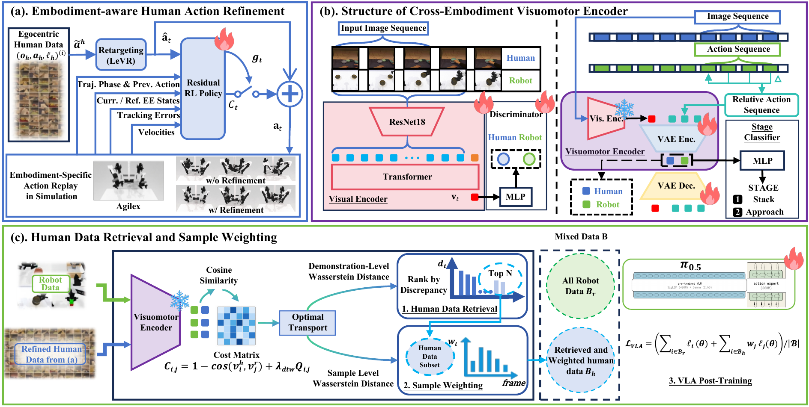
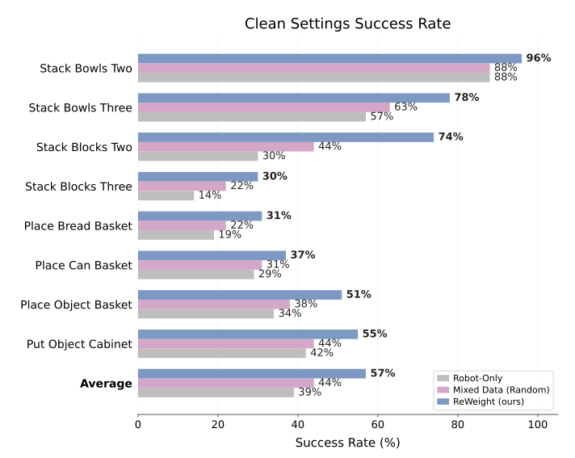
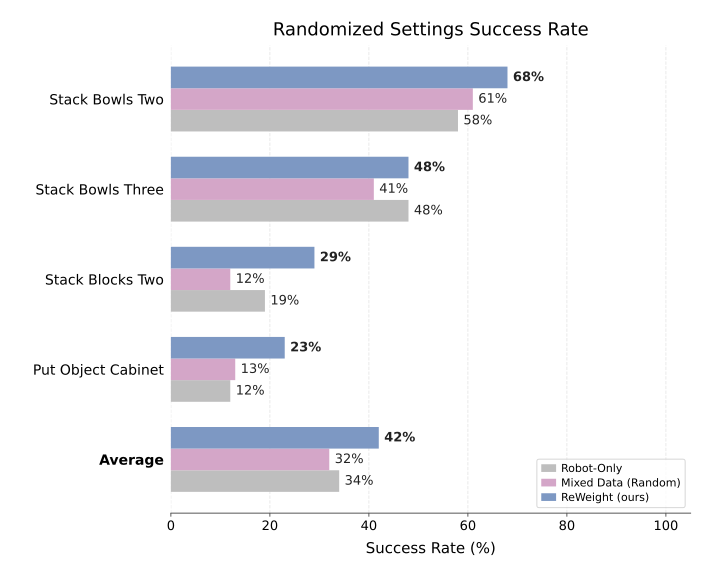
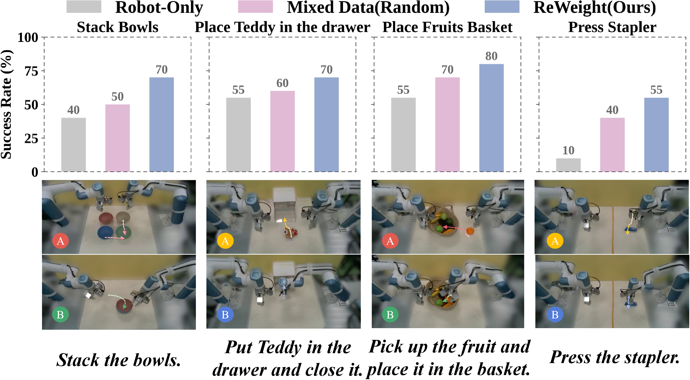

Overview of the proposed ReWeight framework. We first refines egocentric human motions into executable robot action references, while EgoWeight learns a cross-embodiment visuomotor representation to retrieve relevant human demonstrations and assign sample-level training weights. The resulting robot data and weighted human data are jointly used for VLA post-training.


RoboTwin 2.0 — VLA Post-Training: ReWeight selectively retrieves and weights egocentric human demonstrations for post-training, consistently outperforming both Robot-Only training and Mixed Data (Random) human-robot data mixing across eight simulation tasks. The results show that relevant and fine-grained weighted human experience is more effective than indiscriminately adding human demonstrations.
Below are videos of Robot-Only, Mixed Data (Random), and ReWeight on real-world bimanual manipulation tasks. (Videos are sped up by 2x.)
ReWeight improves real-world VLA post-training by retrieving transferable egocentric human demonstrations and assigning sample-level weights, yielding stronger performance than robot-only training and naive human-robot data mixing.
(Real-world Bimanual Task)
(Real-world Bimanual Task)
(Real-world Bimanual Task)
(Real-world Bimanual Task)

Real-world evaluation on physical robot experiments. The results compare Robot-Only, Mixed Data (Random), and ReWeight (Ours) across four tasks and the overall average, showing that selectively retrieved and weighted human demonstrations lead to stronger VLA post-training performance.
We further evaluate robustness under varying illumination and visual distractors, comparing Robot-Only, Mixed Data (Random), and ReWeight (Ours) under each setting.
| Tasks | Methods | Lighting | Distractors | Total |
|---|---|---|---|---|
| Stack Bowls | Robot-Only | 2/10 | 2/10 | 4/20 |
| Mixed Data (Random) | 4/10 | 2/10 | 6/20 | |
| ReWeight (Ours) | 7/10 | 5/10 | 12/20 | |
| Place Teddy in the Drawer | Robot-Only | 3/10 | 5/10 | 8/20 |
| Mixed Data (Random) | 6/10 | 4/10 | 10/20 | |
| ReWeight (Ours) | 5/10 | 5/10 | 10/20 | |
| Place Fruits Basket | Robot-Only | 5/10 | 4/10 | 9/20 |
| Mixed Data (Random) | 5/10 | 7/10 | 12/20 | |
| ReWeight (Ours) | 7/10 | 9/10 | 16/20 | |
| Press Stapler | Robot-Only | 2/10 | 0/10 | 2/20 |
| Mixed Data (Random) | 3/10 | 2/10 | 5/20 | |
| ReWeight (Ours) | 5/10 | 5/10 | 10/20 |